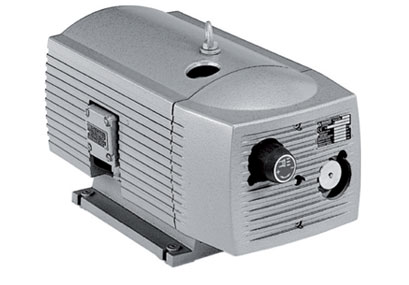

Industrial Vacuum Pump From Becker Pumps Canada | Quality Pneumatic Equipment Becker Pumps Canada produces a broad variety of pneumatic equipment for a broad variety of facility. Products include: Industrial Vacuum Pump Pressure Pumps Combined Pumps Central Air Systems Industrial vacuum pump from Becker Pumps Canada serves a vast range of both industrial applications and … Continue reading “Rotary Vane Pump | Canada Becker Pumps | High Quality”

Industrial Vacuum Pumps | Becker Pumps in Mexico distributed exclusively by BRB del Norte SA de CV Industrial Vacuum Pumps From Becker Pumps in Mexico distributed exclusively by BRB del Norte SA de CV Becker Pumps in Mexico distributed exclusively by BRB del Norte SA de CV offers industrial vacuum pumps that are both compact … Continue reading “Industrial Vacuum Pumps | Becker Pumps | Mexico | BRB del Norte SA de CV”

Rotary Vane Pumps | Rotary Vane Pump | Becker Pumps Corporation Rotary Vane Pumps and Rotary Vane Pump From Becker Pumps Corporation Becker Pumps Corporation produces an impressive range of rotary vane pumps for a wide range of industries and applications. The rotary vane pump selection from Becker serves: Pick and place Vacuum infusion of … Continue reading “Becker Oil | Vacuum Pump Oils | Oil For Vacuum Pump | Becker Pumps USA”

Busch Pump | Busch Pumps | Becker Pumps Corporation About Becker Pumps Corporation: Investing in Your Facility Above all, Becker Pumps Corporation puts the focus on constant enhancement of air moving technology. The company offers exclusive customization services in addition to technical support and an impressive replacement part selection. For this reason, Becker’s industrial vacuum … Continue reading “Busch Pumps | Becker Pumps Corporation”

Industrial Vacuum Pump | Becker Pumps of Canada | Becker Pumps Corporation About Becker Pumps of Canada: Quality Central Air System Equipment to Boost Efficiency Across Industries Becker Pumps of Canada is a leading manufacturer of industrial vacuum pumps, oil for vacuum pump, regenerative blowers, and compressors. Above all, the company has provided quality products … Continue reading “Industrial Vacuum Pump”
Vacuum Pump Part | Becker Pumps In Mexico Distributed Exclusively By Brb del Norte sa de Cv About Becker Pumps In Mexico Distributed Exclusively By Brb Del Norte Sa de CV Becker Pumps in Mexico distributed exclusively by BRB del Norte SA de CV is a leading manufacturer of industrial vacuum pumps for medical, laboratory, … Continue reading “Vacuum Pump Part | Becker Pumps | Mexico | BRB del Norte SA de CV”
Becker Oil | Vacuum Pump Oils | Oil For Vacuum Pump | Becker Pumps USA Maximizing Efficiency and Durability: Becker Oil | Vacuum Pump Oils | Oil For Vacuum Pump No matter the industry and no matter the task, durability is everything. Becker oil is especially notable for its resistance to the wear characteristic of … Continue reading “Becker Oil | Vacuum Pump Oils | Oil For Vacuum Pump | Becker Pumps USA”
Industrial Vacuum Pumps | Becker Air System Machinery | Becker Pumps USA About Becker Pumps USA: An Industry Leader Becker Pumps USA is a leading manufacturer of industrial vacuum pumps, regenerative blowers, and other pneumatic equipment. Since 1885, Becker Pumps has led innovation in central air system equipment. The company’s industrial vacuum pumps and other products … Continue reading “Industrial Vacuum Pumps | Becker Air System Machinery | Becker Pumps USA”

Becker USA | Supervane Vanes for Becker About Becker Pumps: Creating Solutions for a Wide Range of Industrial Applications Becker Pumps is a leading manufacturer of industrial vacuum pumps, compressors, and regenerative blowers. The company has innovated the pneumatic equipment industry since 1885. Becker’s North America headquarters serves the United States of America, Canada, … Continue reading “Becker USA | Supervane Vanes for Becker”

Becker Air System Machinery | Rotary Vane Pumps From medicine to manufacturing and printing to packaging, Becker offers a wide range of rotary vane pumps across numerous industries. Your situation might call for vacuum, compression, or even both. Becker’s selection has the solutions you have been looking for. Rotary vane pumps are essential in effective … Continue reading “Rotary Vane Pumps”
Vane Pumps Now Available With Becker Pumps Mexico Vane Pumps now distributed exclusively by BRB del Norte SA de CV – Becker Pumps in Mexico. For over one hundred years Becker has been maintaining a reputation of high-quality, reliable machinery and trustworthy customer service. Since 1885, Becker Pumps has been designing and manufacturing advanced air … Continue reading “Vane Pumps | Becker Pumps | Mexico | BRB del Norte SA de CV”
Rotary Vane Pump | High Quality | Flexible Pump A Becker Rotary Vane Pump now distributed by Becker Pumps Canada. Offered in a number of basic designs, as well as being customizable to fit your exact specifications, the rotary vane pump is notable for its high-quality yet flexibility. No longer settle or compromise when it … Continue reading “Rotary Vane Pump | Canada Becker Pumps | High Quality”
Becker Air System Machinery | Industrial Vacuum Pumps Becker Pumps in Mexico distributed exclusively by BRB del Norte SA de CV is a leading manufacturer of industrial vacuum pumps for medical, laboratory, and other industrial applications. Medicine, research, and manufacturing call for precision and reliability, and Becker delivers with user-friendly products. The company puts … Continue reading “Industrial Vacuum Pumps”
Becker Pumps | Replacement Vane | Becker Oil-Less Rotary Vane Pump If you are searching for a replacement vane for your Becker Pump product don’t settle for counterfeit vanes. Maintaining maximum vacuum and pressure levels is a must for the prolonged life of your pump. Becker wants you to be aware of counterfeit vanes that … Continue reading “Becker | Genuine Replacement Vanes | Carbon Vacuum Pump Vanes”
Vacuum Pump Repairs | Becker Headquarters | USA Searing for a vacuum pump repairs? Becker headquarters is your premier vacuum pump repair center. Becker’s technicians administer the fastest turnaround, competitive pricing, and ensure that your vacuum pump repairs will be achieved. Additionally, they will provide a full one-year warranty on all vacuum pump repairs done … Continue reading “Vacuum Pump Repairs | Becker Pumps | Becker Genuine Parts”
Vacuum Pump Replacement Parts | Maintaining Your Vacuum Pumps Performance Businesses and facilities looking to maintain for vacuum pump parts should strongly consider Becker ‘s replacement parts. Becker Guanine Vacuum Parts are precisely engineered, manufactured and tested to deliver exemplary performance with all Becker Vacuum Pump parts needs. Therefore using Becker vacuum pump parts, you … Continue reading “Vacuum Pump Replacement Parts | Becker Pumps | Becker Genuine Parts”
Becker Pumps | Vane Pump | Rotary Vane A Rotary Vane Pump has a series of vanes mounted in a rotor and works using a positive displacement; creating circulation in the main cavity then forcing/pulling air through ducts, pipes, or process at varying rates based on use. While operating the vanes slide in and out, … Continue reading “Vane Pump | Becker Pumps | How It Works | Where Its Needed”

Becker Pumps Regen | Blower Pump Technology Consider Becker’s Regen blower pump and other vacuum pump products, when searching for an upgrade for your facility. Becker has been providing the industry with high-quality technology for centralized air systems. Compared to other competing blower pumps, Becker machinery is much quieter while also putting out much more … Continue reading “Blower Pump | Becker Pumps Canada | Regen Blower”
Oil-less Rotary Vane Vacuum Pump in Canada If you’re searching for an Oil-less Rotary Vane vacuum pump in Canada, Becker Pumps of Canada will now be distributed directly into Canada. They will now oversee the responsibilities of R.E. Morrison Equipment. Offering Canadian facilities the opportunity to purchase machinery directly from one of the best central … Continue reading “Canada Becker Pumps | Oil-less Rotary Vane Vacuum Pump”
Becker Pumps Central Air Machinery Energy consumption is one of the most pivotal factors in maintaining efficiency and overall profitability within a company. Centralized air system machines, such as vane pumps and regenerative blowers, are some of the most important contributors to any facility’s power consumption; therefore, the quality of the machinery in a central … Continue reading “Vane Pumps”

Dry Vacuum Pump | Becker Pumps A facility’s central air system has a significant impact on the facility’s energy consumption as well as; therefore, installing reliable machinery is crucial for efficiency and profitability. Many facilities have machinery that produces excessive noise, suggesting high levels of productivity; however, many of these machines are less efficient than … Continue reading “Dry Vacuum Pump”

Becker Pumps Central Air Machinery| Vacuum Pump Vanes The efficiency of a centralized air system has a direct influence on the power consumption of any facility. Unfortunately, many facilities have central air machinery that is incredibly noisy and completely inefficient, wasting power and increasing overall costs; however, Becker offers a variety of high-efficiency machinery that … Continue reading “Vacuum Pump Vanes”

Becker Air System Products | Busch Vacuum Pump Oil Businesses in search of ways to upgrade their facilities’ centralized air systems should consider the large variety of products from Becker Pumps. Becker focuses on the design and production of air system products such as vacuum pumps, regenerative blowers, and busch vacuum pump oil. They offer a … Continue reading “Busch Vacuum Pump Oil”

Becker Vacuum Pump Oil and Regenerative Blowers Businesses and facilities looking to improve their centralized air systems should strongly consider Becker’s products. Becker specializes in the production of regenerative blowers and vacuum pumps as well as vacuum pump oil and grease. They offer a wide variety of regenerative blowers and pumps and diverse selection of … Continue reading “Vacuum Pump Oil”
Becker Air System Machinery | Industrial Vacuum Pumps Many facilities have centralized air systems that are extremely loud and noisy, yet they are doing much less work than the noise suggests. Efficiency is incredibly important for air systems, and with inefficient technology, businesses are losing money. Fortunately, Becker offers a large variety of industrial vacuum … Continue reading “Industrial Vacuum Pumps”

Becker Air System Machinery| Rotary Vane Vacuum Pumps Is your facility’s centralized air machinery extremely loud yet surprisingly inefficient? Becker offers the best solutions for any issues with air system technology. They have extensive experience in the design and manufacturing of this machinery. Becker offers many models and versions of rotary vane vacuum pumps, regenerative … Continue reading “Rotary Vane Vacuum Pumps”
Becker Rotary Vane Pumps Becker is the best solution for businesses and facilities looking to improve their centralized air systems. They specialize in the design and production of rotary vane pumps, regenerative blowers, vacuum pump oil and more. With their wide selection of models and products, Becker is a leader of versatility for the industry, … Continue reading “Rotary Vane Pumps”

Becker Regenerative Blowers Any companies looking to give a significant upgrade to their centralized air systems should consider Becker’s regenerative blowers aka side channel blower and other machinery. Becker’s main focus is the design and manufacturing of high-quality, centralized air system machinery. They offer a myriad of different models and products for regen blowers, vacuum … Continue reading “Regenerative Blowers | Becker Centralized Air Systems”

Becker Air System Products | Regen Blower If you are looking give your business’s centralized air systems a serious upgrade, consider Becker’s regen blower and other vacuum pump products. Becker is a leading provider of air system solutions. They put great focus on developing more efficient technology for their regenerative blowers, vacuum pumps, compressors, and … Continue reading “Centralized Air System Products | Becker Regen Blower”
Centralized Air Systems | Becker Regenerative Blowers Do you need to make a substantial upgrade to your current centralized air systems? If so, consider Becker’s regenerative blowers and other centralized air system machinery. Becker is a company that puts great focus on creating quality regenerative blowers, vacuum pumps, and more. Providing a myriad of different … Continue reading “Becker Centralized Air Systems | Regenerative Blowers”
Quality Becker Parts | Regenerative Blower Are you looking for a machine that can move large amounts of air quickly and efficiently? Well, look no further. Becker has the exact solution to fulfill your needs. Becker is a company that focuses on the production of machines such as their regenerative blower models, vacuum pumps, compressors, … Continue reading “Becker Products | Regenerative Blower”
Genuine Becker Parts | Regenerative Blowers If you need a machine that will move large volumes of air in an efficient manner, Becker’s regenerative blowers are by far the best solution. Becker is a company that specializes in designing and manufacturing regenerative blowers, vacuum pumps and much more. With their variety of different series and … Continue reading “Becker Regenerative Blowers”

Since 1885, Becker has been manufacturing and developing technologies that position them as the number one choice for vacuum pumps, pressure pumps, compressors, regenerative blowers and central systems. Located in Cuyahoga Falls, Becker is local but does business across the country as well. One of their top products is the Becker rotary vane vacuum pump … Continue reading “Vacuum Pumps”